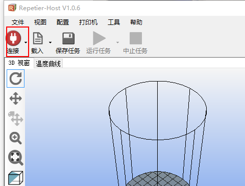
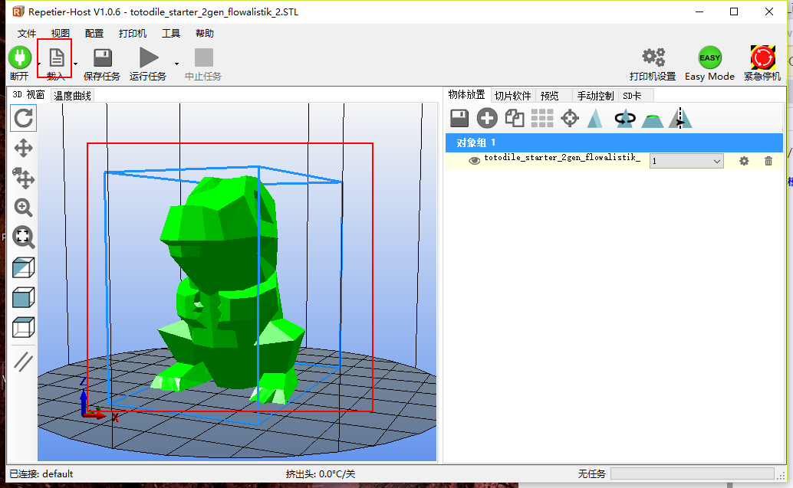
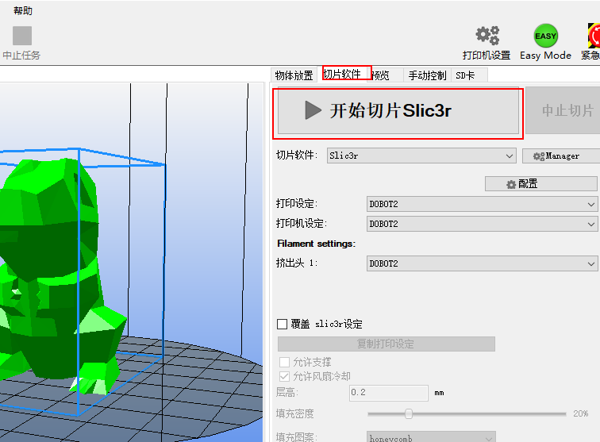
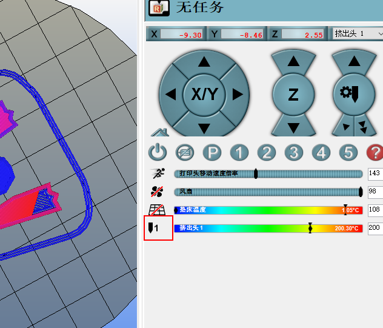
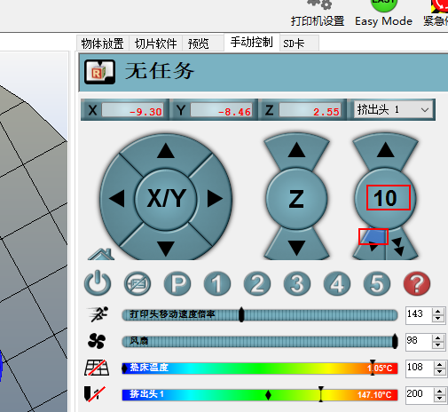
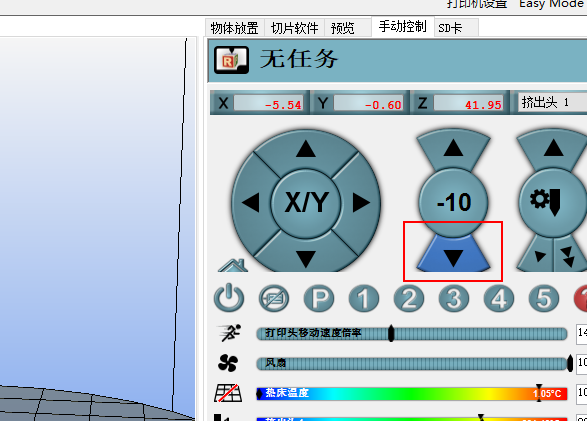
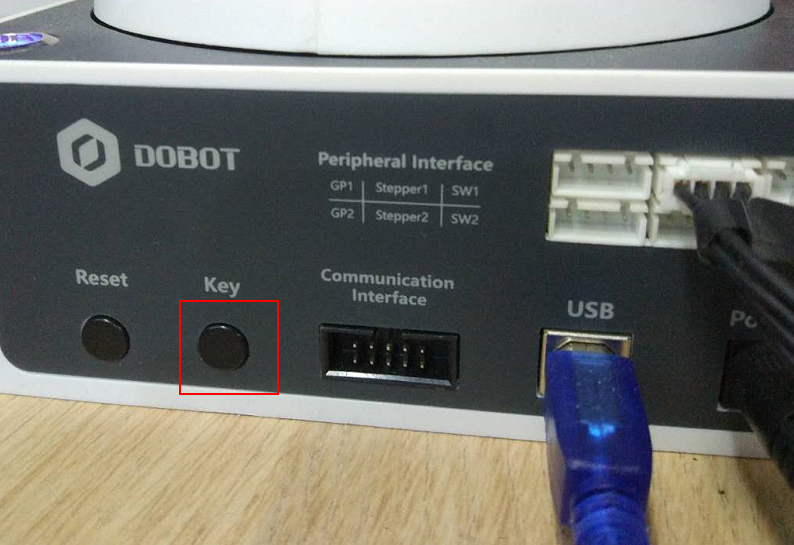
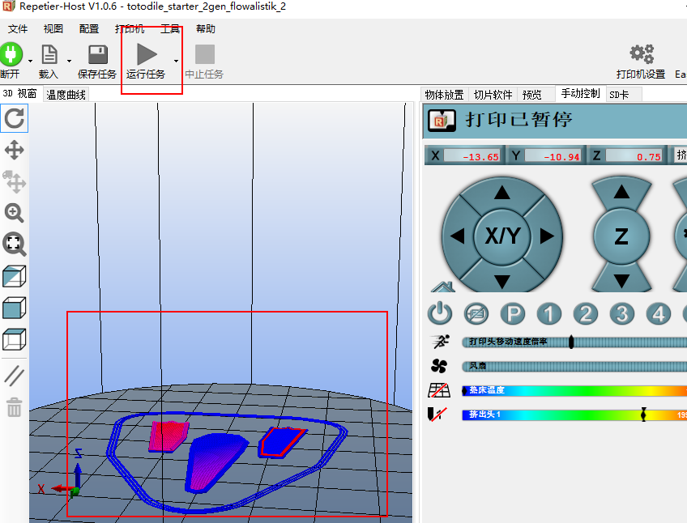

打印3D模型
Magiciande 3D打印功能是通过Reptier-Host来实现的，下面主要介绍使用Reptier-Host怎么来实现:
1.连接Reptier-Host软件
点击软件连接（连接设置）

2.载入模型
点击载入，选择模型，界面会显示导入的模型

3. 模型切片
导入的模型需要经过切片才能打印出来，切换右边的页面到切片软件，点击开始切片。（切片配置）

切片完成之后可以看到模型变成蓝色，右边同时会显示切片信息。
4.预挤出
在第一次使用3D打印的功能前,需要确保打印头可以正常挤出耗材。此时加热头的温度会上升到218℃,需要注意不能用手触碰加热头
打开加热头，等待温度达到预设的温度

手动点击控制耗材挤出，挤出量控制在10，每点击一次需要观察加热头时候有耗材挤出，当加热头有耗材挤出的时候就可以停止了
配图添加加热头挤出耗材示意图:

5.设置打印区域
打印区域要保持平整并粘贴木纹纸以保证模型能够粘稳
配图，机械臂和打印区域并标记打印区域要粘贴木纹纸:
6.调节打印平面
Magician打印3D模型的时候需要手动确定打印的平面，点击控制Z轴下降，使得Magician刚好可以接触桌面

(添加配图，热端刚好接触桌面)
然后按KEY键确定打印平面

7.开始打印
点击开始Magician就会开始打印，此时软件会显示当前Magician的运动轨迹，可以看到模型打印进度。
